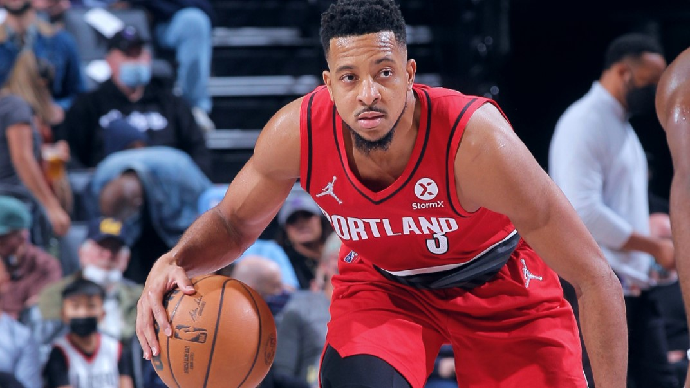
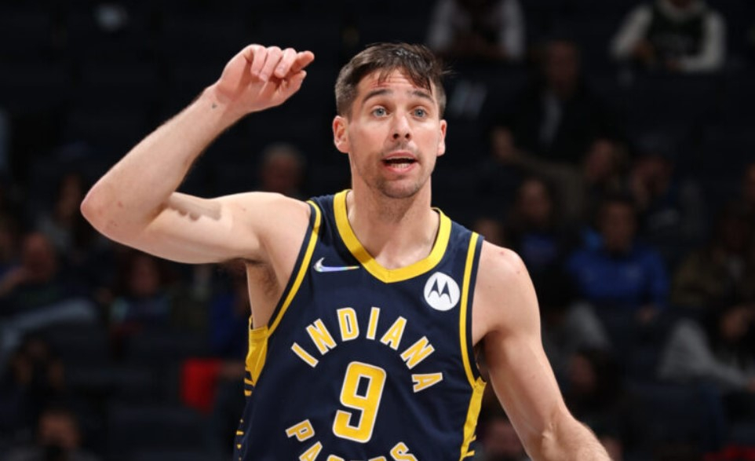

NBA LATEST NEWS
Blazers guard CJ McCollum diagnosed with a pneumothorax
PORTLAND — Upon further examination, a CT scan revealed that Trail Blazers guard CJ McCollum has a pneumothorax (right lung), the team announced Tuesday. McCollum sustained the injury during the 4th quarter of Portland’s game against Boston on December 4. A pneumothorax is a collapsed lung that occurs “when air leaks into the space between your lung and chest wall,” according to the Mayo Clinic. This air pushes on the outside of your lung and makes it collapse. A pneumothorax can be a complete lung collapse or a collapse of only a portion of the lung. McCollum will be further evaluated before a prognosis is determined and his status will be updated accordingly. He did not travel with the team for Wednesday’s game at Golden State. In 24 games this season (all starts), McCollum has averaged 20.6 points (42.4% FG, 39.3% 3-PT, 70.0% FT), 4.1 rebounds, 4.5 assists, 1.08 steals and 35.3 minutes.
Pacers' T.J. McConnell out at least 10-12 weeks after wrist surgery
Indiana Pacers guard T.J. McConnell underwent right hand surgery and is expected to be out at least 10-12 weeks, the team announced. The surgery was done to repair a torn scapholunate ligament in his right wrist. McConnell played three minutes in a Dec. 1 loss against the Atlanta Hawks before exiting with the wrist injury. ESPN’s Adrian Wojnarowski first reported the surgery.